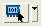
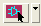

Field |
Usage |
Comments |
|---|---|---|
Find Nets: _________ (text field) |
Select a net from the dropdown menu, or search for nets by typing in the field. You can also enter a space-separated list of nets. Use the layout or schematic icon to select nets in a connected viewer. |
The selected nets are highlighted and brought to the top of the parasitics table. |
Layout icon:  |
Use layout names to identify nets. To select nets in the layout, click the icon, then click at a net location in the layout. The net is entered in the text entry field. |
Click the dropdown button to the right of the icon to switch between layout and schematic names. |
Schematic icon:  |
Schematic icon — use schematic names to identify nets. To select nets in the schematic, click the icon, then click at a net location in the schematic. The net is entered in the text entry field. |
Click the dropdown button to the right of the icon to switch between layout and schematic names. |
Coupling to: All Nets |
Coupling capacitance is calculated to all nets. |
Coupled capacitance is shown in the “CC Total” column. |
Coupling to: Specified Nets _________ (text field) |
Coupling capacitance is calculated to specific nets. Select a net from the dropdown menu, or search for nets by typing in the field. You can also enter a space-separated list of nets. Use the layout or schematic icon to select nets in a connected viewer. |
Coupled capacitance to the selected nets is shown in the “CC Total” column, with the percentage of total coupled capacitance given in parentheses. |
Search for a net in the Find Nets field:
Only nets with matching text appear. Selecting one highlights it and places it at the top of the parasitics table.
Entering a list of nets:
The specified nets are highlighted and placed at the top of the parasitics table in the order they were defined.